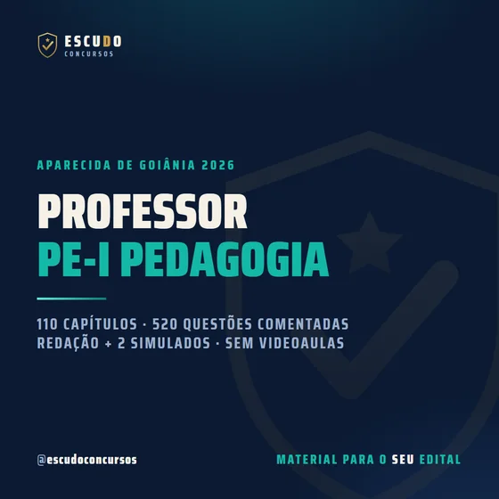
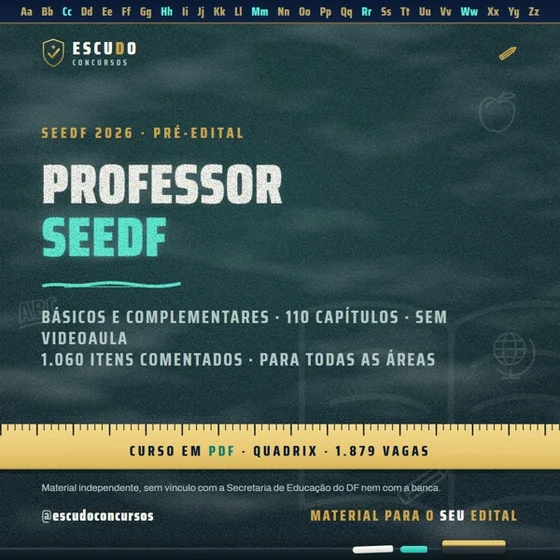
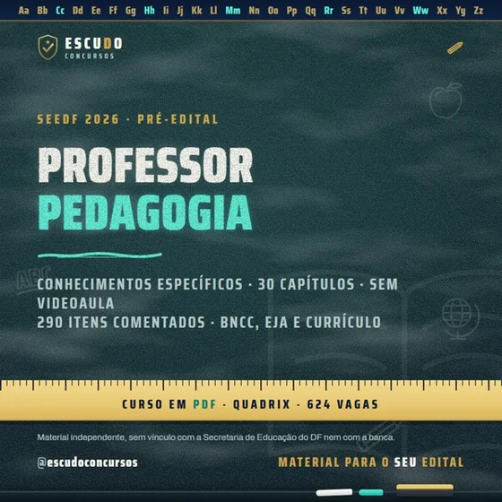
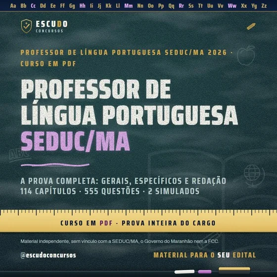
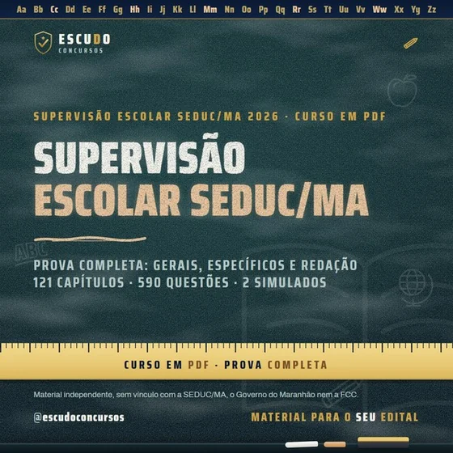
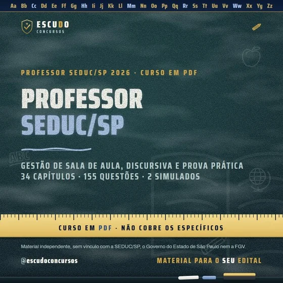
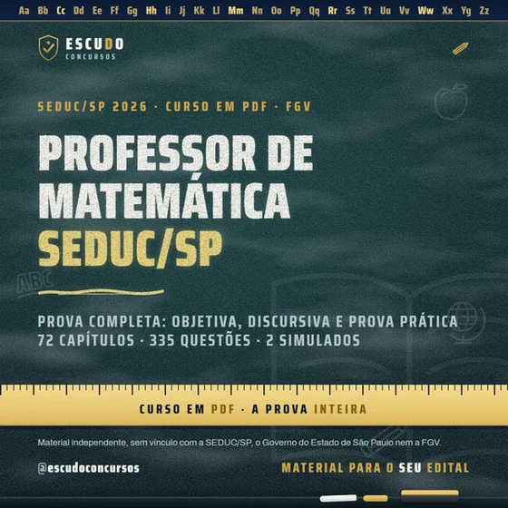
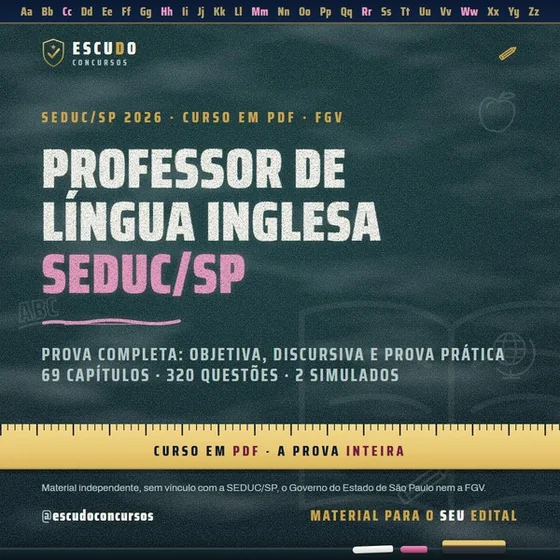

Início › Concursos por carreira › Concursos de educaçãoConcursos de educação 2026: professor e agente educativo
Atualizado em 24/11/2026
Esta página reúne os concursos da área de educação com curso ESCUDO: professor das séries iniciais, professor pedagogo e agente educativo em redes municipais, e o Professor da rede do Distrito Federal (SEEDF).
Nas provas de educação, os conhecimentos pedagógicos e a legislação educacional, como LDB, BNCC, ECA e as normas da rede municipal, costumam valer mais que as matérias básicas. Cada curso segue o programa do seu edital, com a legislação conferida na fonte oficial, casos práticos da rotina da escola e questões inéditas no formato da banca.
Concursos desta página
Cursos em PDF (15)
Ordenados pelo prazo mais próximo: cupom, inscrições ou prova.
Prova em 06/12
SEMED Porto Velho/RO 2026 · IBGP
Professor Séries Iniciais de Porto Velho
141 capítulos e 700 questões comentadas 2 simulados no formato da prova Prova em 06/12/2026 Educação
R$ 47
Ver o curso
Cupom e inscrições até 09/12
Aparecida de Goiânia 2026 · Instituto Verbena/UFG
Agente Educativo de Aparecida de Goiânia
81 capítulos e 400 questões comentadas 2 simulados no formato da prova Prova em 31/01/2027 Educação
De R$ 47 por R$ 37 com o cupom AGENTE37
R$ 47
Ver o curso

Cupom e inscrições até 09/12
Aparecida de Goiânia 2026 · Instituto Verbena/UFG
Professor PE-I Pedagogia de Aparecida de Goiânia
110 capítulos e 520 questões comentadas Redação e 2 simulados Prova em 31/01/2027 Educação
De R$ 47 por R$ 37 com o cupom PEDAGOGIA37
R$ 47
Ver o curso

Cupom até 31/12
SEEDF 2026 · Pré-edital
Professor da SEEDF: Básicos e Complementares
110 capítulos e 1.060 itens comentados 2 simulados de 70 itens Certo ou Errado da Quadrix Prova: aguardando o edital novo Educação
De R$ 47 por R$ 37 com o cupom SEEDF37
R$ 47
Ver o curso

Cupom até 31/12
SEEDF 2026 · Pré-edital
Professor Pedagogia da SEEDF: Específicos
30 capítulos e 290 itens comentados 2 simulados de 50 itens Certo ou Errado da Quadrix Prova: aguardando o edital novo Educação
De R$ 47 por R$ 37 com o cupom PEDSEEDF37
R$ 47
Ver o curso
Cupom e inscrições até 29/01
Professor SEDUC/MA 2026 · FCC
Professor da SEDUC/MA: Conhecimentos Gerais e Redação
84 capítulos e 405 questões comentadas Só os Gerais e a Redação, para todas as áreas: sem os Específicos Prova em 04/04/2027 Educação
De R$ 47 por R$ 37 com o cupom SEDUCMA37
R$ 47
Ver o curso

Cupom e inscrições até 29/01
Professor de Língua Portuguesa SEDUC/MA 2026 · FCC
Professor de Língua Portuguesa da SEDUC/MA: a prova completa
114 capítulos e 555 questões comentadas Gerais, Específicos de Língua Portuguesa e Redação: a prova inteira do cargo Prova em 04/04/2027 Educação
De R$ 47 por R$ 37 com o cupom PROFLPMA37
R$ 47
Ver o curso
Cupom e inscrições até 29/01
Professor de Matemática SEDUC/MA 2026 · FCC
Professor de Matemática da SEDUC/MA: prova completa
110 capítulos e 535 questões comentadas Gerais, 30 Específicos de Matemática e Redação: a prova inteira do cargo Prova em 04/04/2027 Educação
De R$ 47 por R$ 37 com o cupom PROFMATMA37
R$ 47
Ver o curso

Cupom e inscrições até 29/01
Supervisão Escolar SEDUC/MA 2026 · FCC
Supervisão Escolar da SEDUC/MA: prova completa
121 capítulos e 590 questões comentadas Gerais, Específicos e Redação, com 2 simulados de 50 questões Prova em 04/04/2027 Educação
De R$ 47 por R$ 37 com o cupom SUPERVISAOMA37
R$ 47
Ver o curso

Cupom e inscrições até 15/02
Professor SEDUC/SP 2026 · FGV
Professor da SEDUC/SP: Gestão de Sala de Aula, Prova Discursiva e Prova Prática
34 capítulos e 155 questões comentadas A parte comum a todos os componentes: sem os 20 Específicos Prova em 25/04/2027 Educação
De R$ 47 por R$ 37 com o cupom SEDUCSP37
R$ 47
Ver o curso

Cupom e inscrições até 15/02
Professor de Matemática SEDUC/SP 2026 · FGV
Professor de Matemática da SEDUC/SP: prova completa
72 capítulos e 335 questões comentadas Objetiva, discursiva e prova prática em vídeo: a prova inteira do componente Prova em 25/04/2027 Educação
De R$ 47 por R$ 37 com o cupom PROFMATSP37
R$ 47
Ver o curso

Cupom e inscrições até 15/02
Professor de Língua Inglesa SEDUC/SP 2026 · FGV
Professor de Língua Inglesa da SEDUC/SP: prova completa
69 capítulos e 320 questões comentadas Objetiva, discursiva e prova prática em vídeo: a prova inteira do componente Prova em 25/04/2027 Educação
De R$ 47 por R$ 37 com o cupom PROFINGSP37
R$ 47
Ver o curso
Cupom e inscrições até 15/02
Professor de Ciências SEDUC/SP 2026 · FGV
Professor de Ciências da SEDUC/SP: prova completa
74 capítulos e 345 questões comentadas Objetiva, discursiva e prova prática em vídeo: a prova inteira do componente Prova em 25/04/2027 Educação
De R$ 47 por R$ 37 com o cupom PROFCIENSP37
R$ 47
Ver o curso
Cupom e inscrições até 15/02
Professor de Física SEDUC/SP 2026 · FGV
Professor de Física da SEDUC/SP: prova completa
73 capítulos e 340 questões comentadas Objetiva, discursiva e prova prática em vídeo: a prova inteira do componente Prova em 25/04/2027 Educação
De R$ 47 por R$ 37 com o cupom PROFFISSP37
R$ 47
Ver o curso
Cupom e inscrições até 15/02
Professor de Língua Portuguesa SEDUC/SP 2026 · FGV
Professor de Língua Portuguesa da SEDUC/SP: a prova completa
92 capítulos e 435 questões comentadas Objetiva, Prova Discursiva e Prova Prática em vídeo: as três provas do componente Prova em 25/04/2027 Educação
De R$ 47 por R$ 37 com o cupom PROFLPSP37
R$ 47
Ver o curso
Não achou a sua apostila?
Peça para a ESCUDO. Diga o concurso e o cargo: se tiver edital publicado ou previsto, a gente avalia montar o curso e te avisa quando sair.
Se preferir, mande no Instagram @escudoconcursos .
Por carreira: Concursos policiais · Guarda Municipal · Concursos administrativos · Concursos de tribunais · Concursos bancários
Por estado: Pernambuco · Paraná · Pará · Paraíba · Roraima · Santa Catarina · Espírito Santo · Acre · Tocantins · Mato Grosso · Distrito Federal · Rondônia · Maranhão · Alagoas · Bahia · Goiás · Minas Gerais · Rio de Janeiro · São Paulo
Ver todos os cursos abertos